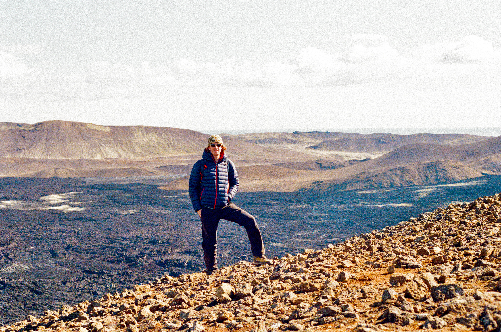

Computational geomorphologist.
HyLands-lite: SPACE fluvial erosion plus stochastic landsliding after Campforts et al. (2020). Nondimensional units, dx = 1, base level at all four edges. Documentation below.
Model documentation
The landscape is a deliberately small, browser-sized reimplementation of the HyLands 1.0 hybrid landscape evolution model (Campforts et al., 2020), which couples the SPACE bedrock-alluvial river model (Shobe et al., 2017) with stochastic, Culmann-type deep-seated landsliding. Every grid cell carries bedrock elevation R and sediment thickness H; topography is η = R + H. Equation numbers follow the paper.
Mass conservation
U rock uplift, Er bedrock erosion, Es sediment entrainment, Ds deposition, φsed sediment porosity. Fluvial and hillslope terms act on every cell; no channel/hillslope mask is imposed.
Fluvial sediment flux
Ff is the fraction of detached bedrock lost to permanent suspension (set to 0 here, so the model is fully mass conservative).
SPACE entrainment and incision
The cover effect: as H/H* grows, power shifts from incising rock to moving sediment. q = kqAm, with kq absorbed into K; here A is scaled by the precipitation slider. n = 1, m = 0.5.
Fluvial deposition
V is the effective settling velocity; flooded cells use a larger Vlake and do not erode.
Landslide initiation
Cells with topographic slope β above the friction angle φ are candidates. The failure plane through a critical cell dips at θc (Culmann); all connected upslope cells above that plane are cut down to it, sediment first, then bedrock. The slider C′ is the lumped term 4C/(ρg) in model length units.
Landslide runout and deposition
Failed material, bulked by 1/(1 − φsed), is routed downslope with multiple flow directions in proportion to slope. Each cell keeps dx/L of what arrives; with Sc = tan φ, steep cells pass everything on and gentle cells retain most of it. A minimum deposit angle δ stops deposits piling above their neighbours.
Numerical implementation and departures from HyLands 1.0
- Grid of 160 × 96 cells, all edges fixed at base level, initial surface of random microtopography. The first 300 steps are fast-forwarded so a range has grown before you arrive; after that the model advances at the Speed setting (default 8 steps per second, half that on other pages).
- Flow routing: depressions filled each step with an ε priority flood (Barnes et al., 2014); D8 steepest descent on the filled surface, ordered with the Braun and Willett (2013) stack. Flooded cells (receiver higher than the cell) have S = 0, so they do not erode and trap sediment through Eq. (5) with Vlake.
- Bedrock incision (Eq. 4) is solved implicitly from base level upstream; sediment entrainment, deposition and flux (Eqs. 2, 3, 5) are then updated explicitly from the divides downstream, with entrainment capped by available sediment and half the local drop. HyLands solves SPACE following Shobe et al. (2017); this is a simplified operator split.
- Eq. (9) is applied as a per-step failure probability pLS dt/tLS, so tLS acts as a return time. Hs is taken as the height of a cell below its highest neighbour.
- No hillslope diffusion: as in the HyLands experiments, hillslope relief is set by threshold landsliding alone.
- Units are nondimensional and parameters are tuned for a responsive display, not calibrated to any landscape. Clicking adds a cone of rock uplift.
Current parameters
| Symbol | Meaning | Value |
|---|
References
Campforts, B., Shobe, C. M., Steer, P., Vanmaercke, M., Lague, D., and Braun, J. (2020). HyLands 1.0: a hybrid landscape evolution model to simulate the impact of landslides and landslide-derived sediment on landscape evolution. Geoscientific Model Development, 13, 3863-3886. doi:10.5194/gmd-13-3863-2020
Shobe, C. M., Tucker, G. E., and Barnhart, K. R. (2017). The SPACE 1.0 model. Geoscientific Model Development, 10, 4577-4604.
Braun, J., and Willett, S. D. (2013). A very efficient O(n), implicit and parallel method to solve the stream power equation. Geomorphology, 180-181, 170-179.
Barnes, R., Lehman, C., and Mulla, D. (2014). Priority-flood: an optimal depression-filling and watershed-labeling algorithm. Computers and Geosciences, 62, 117-127.
Henri Wilks-Stebbings, MSc
Henri is a doctoral researcher in geology at the University of Salzburg, working at the intersection of geomorphology, climate science, and big data.
His PhD, Landscape response to a changing climate in the Eastern Alps: Analysing Big Data for past, present, and future conditions, quantifies how the thermal, geomorphological and biological systems of the Eastern Alps are reorganising as the climate warms.
The project is part of Project 6 of AlpsChange, an FWF-funded doctoral programme based in the Division of Geology, Department of Environment and Biodiversity. He is supervised by Dr Jörg Robl and belong to the wider Landscape Evolution Modelling working group. As a computational geomorphologist, he combines large geospatial datasets with quantitative and numerical methods to link past, present and projected landscape change.
Originally from England, Henri first became interested in Earth surface processes during his undergraduate degree in Liverpool, where a final-year focus on mass movements and landsliding under Dr Kevin Crawford set the direction of my research. He then completed an MSc in Earth Sciences at the Vrije Universiteit Amsterdam (2025), specialising in tectonic geomorphology, sedimentology and numerical geoscience under Dr Duna Roda-Boluda and Dr Benjamin Campforts. That training gave him the quantitative and computational skills now utilised in his doctoral work.

Past, present and future projects
Landscape response to a changing climate in the Eastern Alps: analysing big data for past, present and future conditions
How does the landscape of the Eastern Alps respond to a changing climate? Decades of satellite and field observations record these changes in great detail, yet how the coupled thermal, geomorphological and biological systems will evolve remains poorly constrained. This project uses geospatial and computational methods to resolve the interplay of climatic and geological factors and their imprint on the Earth's surface, using Google Earth Engine and the University of Salzburg's high-performance computing infrastructure.
- Spatio-temporal analysis of environmental change: quantifying gradients from multi-source geological datasets in MATLAB, Google Earth Engine and Python
- Erosion potential and hydrological response: how changes in temperature and precipitation influence erosion and sediment transport in Alpine torrents, historically and under future climate scenarios
- Slope stability: mapping the sensitivity of Alpine landscapes to identify areas most vulnerable to failure using deep learning, including a numerical model that constrains slope stress at the mountain scale
Constraining landslide rates, controls and spatial distributions in southern Calabria, Italy
How do rainfall, topography and lithology control landslide activity across Reggio Calabria? A multi-temporal inventory built from satellite imagery (2000 to 2024) quantified landslide frequency, magnitude and spatial distribution under changing climate. GIS and Google Earth Engine workflows linked failures to slope aspect, vegetation (Landsat NDVI) and precipitation intensity (ERA5).
- Landslide density increased between 2012 and 2024, particularly on south- and east-facing slopes
- Weak, fractured phyllites and schists were more susceptible to shallow failure than coherent carbonates
- Mean annual precipitation rose by up to ~25% over 24 years, alongside more shallow, rainfall-triggered landslides
- Slower vegetation recovery on steep metamorphic terrain suggests limited slope resilience
- Volume-area scaling exponent γ ≈ 1.28, consistent with existing literature
The magnitude and frequency of landslides in the Southern Alps, New Zealand
How do tectonic uplift and intense rainfall shape the Southern Alps? Historical orthophotos and recent satellite data were used to map over 2,700 landslides spanning 70 years, tracking changes in frequency, size and triggering, and deriving first-order multi-decadal landslide erosion rates.
- Erosion rates of 0.09 to 0.51 mm/yr, peaking 5 to 10 km from the Alpine Fault
- Fault throw rates strongly correlate with landslide-derived erosion (R² = 0.97)
- Short, high-intensity precipitation is the likely primary trigger
- Median landslide area has decreased since the 1960s, with smaller, more frequent failures dominating
Models, pipelines and this website
The landscape behind this page is a HyLands-style landscape evolution model (Campforts et al. 2020) written in plain JavaScript: about 200 lines, no libraries, advancing at a few steps per second.
The model on this site
- SPACE bedrock and sediment erosion (Shobe et al., 2017) with the cover effect
- Stochastic Culmann landsliding and nonlocal runout deposition (Campforts et al., 2020)
- Priority-flood lake filling and an O(n) implicit stream-power solver
- Runs in your browser at ~6 ms per step on a 160 × 96 grid
Full equations and every simplification are documented on the Model page.
Toolkit
Large-scale geospatial analysis runs on Google Earth Engine and the University of Salzburg HPC cluster; figures are produced with Generic Mapping Tools (bash-command line)
My work
I will upload my own computational pipelines and workflows here in due course.
CV
Full CV (PDF) ↗Education
Experience
Publications
- Towards a stress-based stability criterion for rock slopes from 3D stress modelling of entire mountain massifs. Haunsperger, V., Robl, J., Hergarten, S., Argentin, A. L., Wilks-Stebbings, H., Schröder, A. In preparation.
- Hidden erosion: quantifying carbonate mass loss in the Taugl catchment, Northern Calcareous Alps. Pleyer, B., Robl, J., Dremel, F., Wilks-Stebbings, H., Tenczer, V., Otto, J. C., Hilberg, S., Rinder, T., Hauzenberger, C. In preparation.
- Tectonic and climatic controls on valley-floor width along the Alpine Fault, New Zealand. Clubb, F. J., Roda-Boluda, D. C., Wilks-Stebbings, H., de Vries, L. AGU Fall Meeting 2024, oral presentation by F. Clubb.
Awards
- Liverpool Geological Society Prize, best performing Liverpool Hope student in Physical Geography
Get in touch
For collaboration, data or model questions, email is quickest.